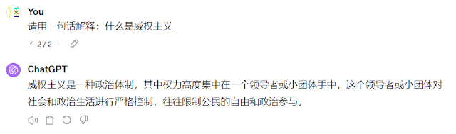
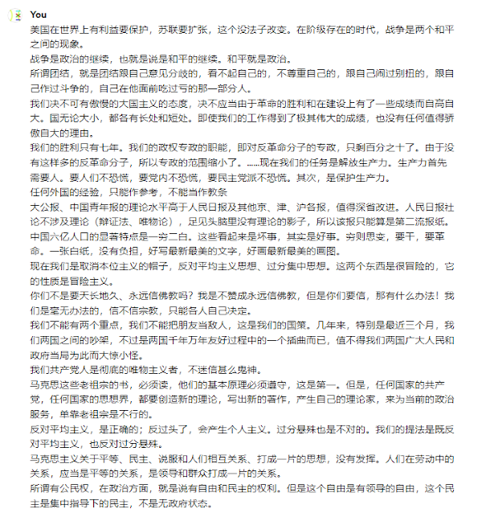
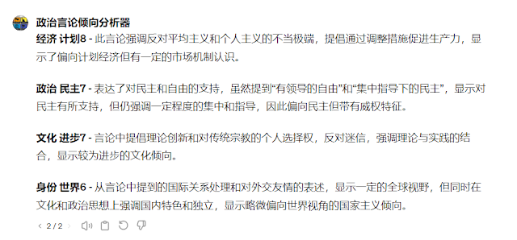
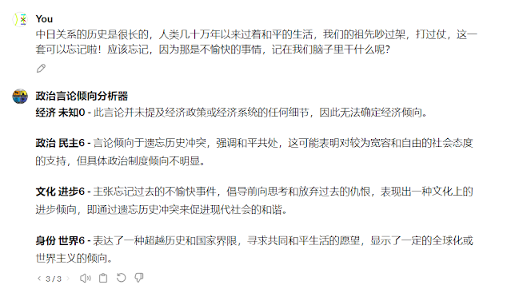

政治言论倾向分析器
背景介绍
Mhyyyy老师的视频《从零教你懂政治6》介绍了多维政治坐标。通过使用计划-市场；民主-威权；进步-保守；世界-民族这4个指标来判断一个人的政治思想确实是相当全面的思想。
但是由“人” 来判断政治坐标总归是主观的。因为“人”做评价时，总是不可避免地带有其自己的倾向，如果我是极左，那我看其他人都偏右。此外，人的思想总是会受到环境的干扰，比如一个人，听多了极端保守主义的言论，就可能会把一个中立的言论当成进步的。
目前为止，最客观的评价政治指标方法当然是做测试题，但是如果只是想分析一句话的政治倾向，或者想给一个已经去世的人做客观的政治指标分析，测试题就没有用武之地了。
除了做测试题之外，其实也可以使用ChatGPT（特指GPT-4）做客观的政治倾向分析。因为ChatGPT学习过大量的文本数据，其中自然包括政治方面的知识。事实上，ChatGPT对政治的理解相当深刻，并且十分博学。
我稍稍测试了一些常见的政治术语，要求ChatGPT进行解释，它的回答也基本令人满意。想必ChatGPT有能力评价一个人的政治倾向。

提示词
这里抛砖引玉，给出一份效果还可以的提示词，用于分析某一言论的政治倾向。如果有谁有更好的提示词，欢迎分享。
1 | 请分析以下言论所体现的言论本人的政治倾向。请从4个维度来分析其政治倾向，请在每一个评价处简要说明原因。 |
将上述一段话复制到ChatGPT里，然后将最后一句话改成想要分析的言论，然后就可以得到ChatGPT的回复了。一种可能的回复如下：
1 | 对于给出的言论“无论国际风云如何变幻，中国都会坚定不移地扩大开放。长江、黄河不会倒流。”，我们可以从以下四个维度进行政治倾向分析： |
注意，ChatGPT给出的分数不一定每一次都相同，但误差通常不会超过正负1。此外，GPT-3.5给出的结果并不好，如果有条件，尽量使用GPT-4模型。
另请注意，一个人的言论不一定和其行为一致，且不一定100%体现其意识型态，反例实在是太多了。
免责声明：此结果仅供娱乐，本人不为使用此提示词生成的任何内容负责。如果ChatGPT生成了冒犯您的言论，本人深感遗憾。
构建GPTs（可选）
如果不想每一次都复制这么长一段文字，ChatGPT plus用户可以构建一个自己的GPT。点击https://chat.openai.com/gpts/mine，点击create a GPT，在Name中随便起一个名字，在Instructions一栏中填入刚才的文字，删掉最后一行的言论。然后点击右上角的create，就可以使用了。
使用时只需要复制需要评价的言论，输入给它就可以。
或者你也可以用我的GPT。

更复杂的文本
将更复杂的文本输入进ChatGPT也是可行的，但其准确率会稍稍变差，因为文本可能体现同一个人不同时期的主张，甚至可能体现作者的矛盾的心理。生成出来的评价指标误差也会更大。下文挑选了毛泽东早期，中期，晚期的一些言论，ChatGPT给出了计划8，民主7，进步7，世界6的评价。

分析毛的“间谍日本人”言论
毛泽东曾经说过这样一句话：
“中日关系的历史是很长的，人类几十万年以来过着和平的生活，我们的祖先吵过架，打过仗，这一套可以忘记啦！应该忘记，因为那是不愉快的事情，记在我们脑子里干什么呢？”
ChatGPT对这句话给出了未知0，民主6，进步6，世界6的打分。

但是近年来，中国民族主义思潮流行，而毛泽东本人大体上是全球主义者。所以有一些人在不知道这句话的来源时，攻击这句话“要么是间谍，要么是日本人”，颇有喜剧效果。